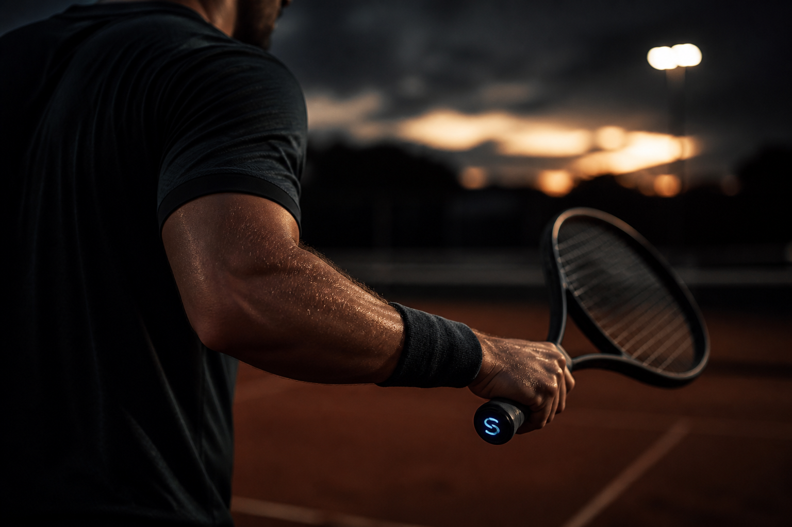
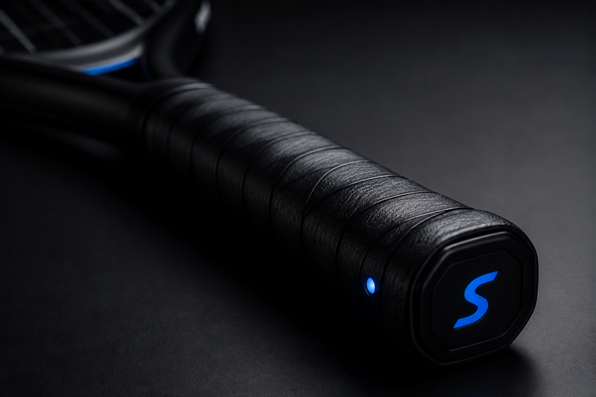
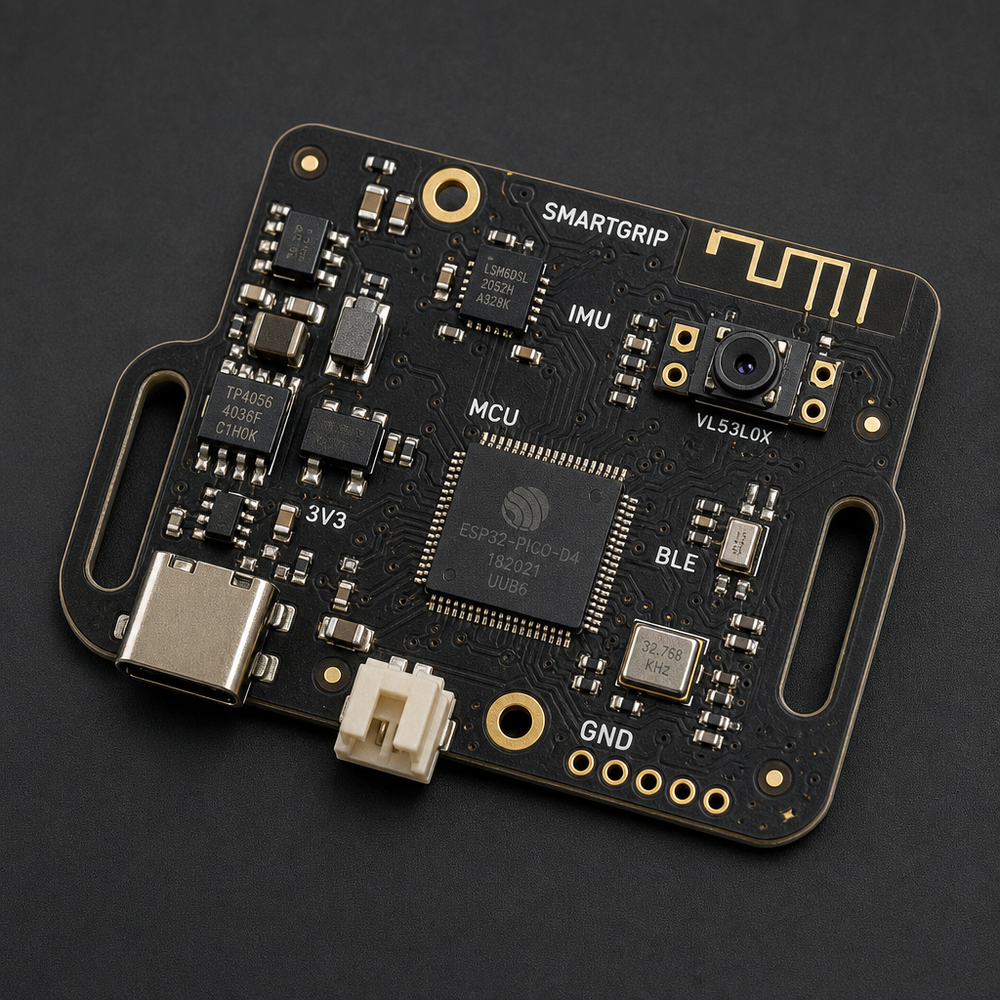
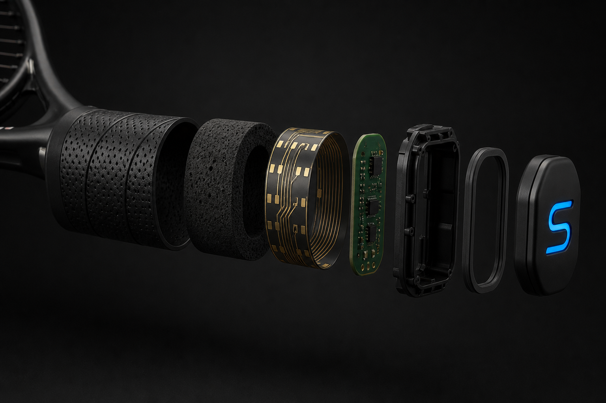
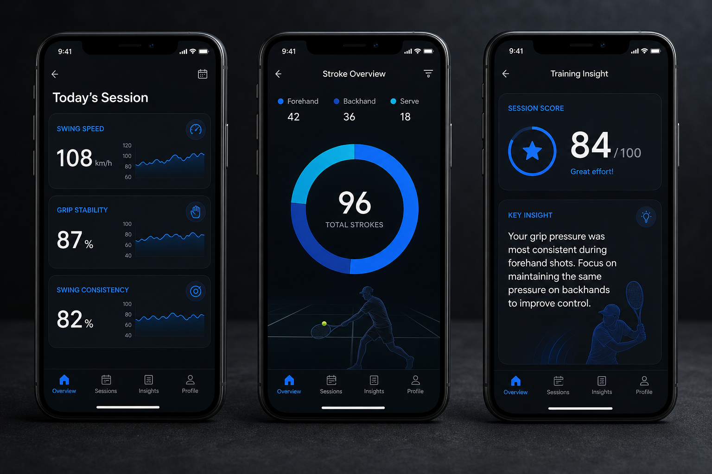

G1
Grip analysis
Pressure magnitude, distribution, and change through the swing — including fatigue-related grip drift.

Sports engineering / Wearable technology
SmartGrip AI is a hidden sensor system inside the handle — built to answer three questions traditional coaching cannot see at millisecond scale.
01 / The problem
Coaches and players already have excellent tools: live observation, video replay, and feel. Those methods are valuable. They also miss events that last a few milliseconds — pressure shifts in the hand, a quiet rotation of the handle, a face that opens just before contact.
SmartGrip AI does not replace the coach. It adds a data layer to the relationship between player, racket, and ball.
Estimated swing speed, acceleration, angular motion, and rhythm from a 6-axis IMU seated in the handle.
Multi-zone pressure sensing around the grip, before and after contact, including left–right imbalance and fatigue drift.
An experimental compatibility score from player traits, swing character, grip behaviour, and racket dynamics — conceptual, not certified.
02 / Product appearance
The product should not look like a gadget taped to a racket. It should look like part of professional tennis equipment — a hidden module, a single status LED, a quiet S on the butt cap.

03 / The module
The core electronics are a compact IMU tracker in the same family as laboratory object-tracking boards: microcontroller, 6-axis inertial sensor, memory, Bluetooth, and a small rechargeable cell — packed onto a board that can disappear inside the handle.
The reference form is a Tracer-like wearable PCB: dense, strap-mountable for early experiments, then slimmed into a 70 mm capsule for the form prototype.

04 / Design goals
Pressure magnitude, distribution, and change through the swing — including fatigue-related grip drift.
Estimated speed, acceleration, angular velocity, and timing. Stroke recognition is experimental.
Handle-centered motion features used to describe dynamic behaviour, not a claim of lab-grade ball speed.
A conceptual compatibility model. Prototype scores are experimental, not medical or certified fitting advice.
Session views that a player can read in seconds: stability, consistency, and one clear next focus.
The innovation is the system: grip + motion + racket + language a player already understands.

05 / Inside the handle
The module sits on the handle axis to limit balance shift. Layers peel from wrap to core: grip, shock foam, flexible pressure sheet, electronics, ABS holder, silicone seal, butt cap.
Future work studies cavity geometry, module mass, and counterweight so the racket still feels like the racket.
See the exploded view06 / Who it is for
Longitudinal change: swing speed, grip stability, laterality, and what happens when fatigue arrives.
A second channel beside video and court-side eyes. Data is evidence, not a replacement for judgment.
Simpler session scores so weekend practice still produces a readable story.
07 / App concept
Numbers are estimates from handle sensors. They are for training insight, not radar-certified ball speed or medical advice.
Focus on maintaining consistent grip pressure during high-intensity swings.

Prototype metrics are illustrative. Stroke labels are pattern hypotheses from IMU + pressure, to be validated against video.
08 / Positioning
SmartGrip AI is a conceptual tennis performance system designed to investigate the relationship between player movement, grip pressure, and racket dynamics.
The project combines product design, embedded sensing, motion analysis, data visualization, and sports engineering. It is not “a tennis chip.” It is a method for making hidden racket–hand interactions measurable.
Next
The wearable-science page explains how sensors work together. The module page is the hardware object. The prototype lab covers form, function, tests, and limits.